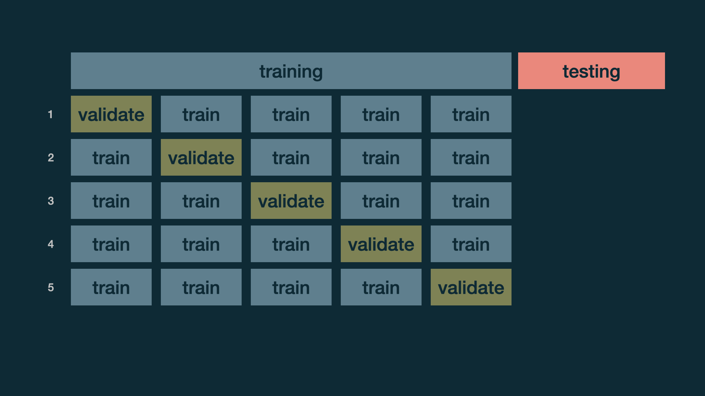

Cross validation
Data Science in a Box
layout: true
class: middle
Data and exploration
background-image: url(“img/the-office.jpeg”) class: middle
Data
office_ratings <- read_csv("data/office_ratings.csv")
office_ratings# A tibble: 188 x 6
season episode title imdb_rating total_votes air_date
<dbl> <dbl> <chr> <dbl> <dbl> <date>
1 1 1 Pilot 7.6 3706 2005-03-24
2 1 2 Diversity Day 8.3 3566 2005-03-29
3 1 3 Health Care 7.9 2983 2005-04-05
4 1 4 The Alliance 8.1 2886 2005-04-12
5 1 5 Basketball 8.4 3179 2005-04-19
6 1 6 Hot Girl 7.8 2852 2005-04-26
# ... with 182 more rows.footnote[ .small[ Source: The data come from data.world, by way of TidyTuesday. ]]
IMDB ratings
.panelset[]
IMDB ratings vs. number of votes
.panelset[]
Outliers
.panelset[]
.footnote[ .small[ If you like the Dinner Party episode, I highly recommend this “oral history” of the episode published on Rolling Stone magazine.]]
IMDB ratings vs. seasons
.panelset[]
class: middle
Modeling
Train / test
- Create an initial split
set.seed(1122)
office_split <- initial_split(office_ratings) # prop = 3/4 by default| .pull-left[ - Save training data] |
|---|
| .pull-right[ - Save testing data |
| ::: {.cell layout-align=“center”} |
{.r .cell-code} office_test <- testing(office_split) dim(office_test) |
| ::: {.cell-output .cell-output-stdout} |
| ] |
Specify model
office_mod <- linear_reg() %>%
set_engine("lm")
office_modLinear Regression Model Specification (regression)
Computational engine: lm Build recipe
.panelset[ .panel[.panel-name[Code]] .panel[.panel-name[Output] .small[]]]
Build workflow
.panelset[ .panel[.panel-name[Code]] .panel[.panel-name[Output] .small[]]]
Fit model
.panelset[ .panel[.panel-name[Code]] .panel[.panel-name[Output] .small[]]]
class: middle
Evaluate model
Make predictions for training data
office_train_pred <- predict(office_fit, office_train) %>%
bind_cols(office_train %>% select(imdb_rating, title))
office_train_pred# A tibble: 141 x 3
.pred imdb_rating title
<dbl> <dbl> <chr>
1 7.90 8.1 Garden Party
2 8.43 7.9 The Chump
3 7.81 7.1 Here Comes Treble
4 7.94 6.7 Get the Girl
5 7.92 7.9 Tallahassee
6 8.29 7.7 The Inner Circle
# ... with 135 more rowsR-squared
Percentage of variability in the IMDB ratings explained by the model
rsq(office_train_pred, truth = imdb_rating, estimate = .pred)# A tibble: 1 x 3
.metric .estimator .estimate
<chr> <chr> <dbl>
1 rsq standard 0.500–
.question[ Are models with high or low \(R^2\) more preferable?]
RMSE
An alternative model performance statistic: root mean square error
\[ RMSE = \sqrt{\frac{\sum_{i = 1}^n (y_i - \hat{y}_i)^2}{n}} \]
–
rmse(office_train_pred, truth = imdb_rating, estimate = .pred)# A tibble: 1 x 3
.metric .estimator .estimate
<chr> <chr> <dbl>
1 rmse standard 0.373–
.question[ Are models with high or low RMSE are more preferable?]
Interpreting RMSE
.question[ Is this RMSE considered low or high?]
rmse(office_train_pred, truth = imdb_rating, estimate = .pred)# A tibble: 1 x 3
.metric .estimator .estimate
<chr> <chr> <dbl>
1 rmse standard 0.373–
office_train %>%
summarise(min = min(imdb_rating), max = max(imdb_rating))# A tibble: 1 x 2
min max
<dbl> <dbl>
1 6.7 9.7class: middle
.hand[ .light-blue[ but, really, who cares about predictions on .pink[training] data?]]
Make predictions for testing data
office_test_pred <- predict(office_fit, office_test) %>%
bind_cols(office_test %>% select(imdb_rating, title))
office_test_pred# A tibble: 47 x 3
.pred imdb_rating title
<dbl> <dbl> <chr>
1 8.52 8.4 Office Olympics
2 8.54 8.6 The Client
3 8.90 8.8 Christmas Party
4 8.71 9 The Injury
5 8.50 8.2 Boys and Girls
6 8.46 8.4 Dwight's Speech
# ... with 41 more rowsEvaluate performance on testing data
- RMSE of model fit to testing data
rmse(office_test_pred, truth = imdb_rating, estimate = .pred)# A tibble: 1 x 3
.metric .estimator .estimate
<chr> <chr> <dbl>
1 rmse standard 0.386- \(R^2\) of model fit to testing data
rsq(office_test_pred, truth = imdb_rating, estimate = .pred)# A tibble: 1 x 3
.metric .estimator .estimate
<chr> <chr> <dbl>
1 rsq standard 0.556Training vs. testing
| metric | train | test | comparison |
|---|---|---|---|
| RMSE | 0.373 | 0.386 | RMSE lower for training |
| R-squared | 0.500 | 0.556 | R-squared higher for training |
Evaluating performance on training data
- The training set does not have the capacity to be a good arbiter of performance.
| - It is not an independent piece of information; predicting the training set can only reflect what the model already knows. |
|---|
| - Suppose you give a class a test, then give them the answers, then provide the same test. The student scores on the second test do not accurately reflect what they know about the subject; these scores would probably be higher than their results on the first test. |
| .footnote[ .small[ Source: tidymodels.org]] |
class: middle
Cross validation
Cross validation
More specifically, v-fold cross validation:
- Shuffle your data v partitions
- Use 1 partition for validation, and the remaining v-1 partitions for training
- Repeat v times
.footnote[ .small[ You might also heard of this referred to as k-fold cross validation.]]
Cross validation

Split data into folds
.pull-left[] .pull-right[]
Fit resamples
.pull-left[] .pull-right[]
Collect CV metrics
collect_metrics(office_fit_rs)# A tibble: 2 x 6
.metric .estimator mean n std_err .config
<chr> <chr> <dbl> <int> <dbl> <chr>
1 rmse standard 0.403 5 0.0336 Preprocessor1_Model1
2 rsq standard 0.413 5 0.0727 Preprocessor1_Model1Deeper look into CV metrics
.panelset[ .panel[.panel-name[Raw]] .panel[.panel-name[Tidy]]]
How does RMSE compare to y?
- Cross validation RMSE stats
# A tibble: 1 x 6
min max mean med sd IQR
<dbl> <dbl> <dbl> <dbl> <dbl> <dbl>
1 0.289 0.475 0.403 0.430 0.0751 0.0841- Training data IMDB score stats
# A tibble: 1 x 6
min max mean med sd IQR
<dbl> <dbl> <dbl> <dbl> <dbl> <dbl>
1 6.7 9.7 8.24 8.2 0.530 0.600What’s next?
